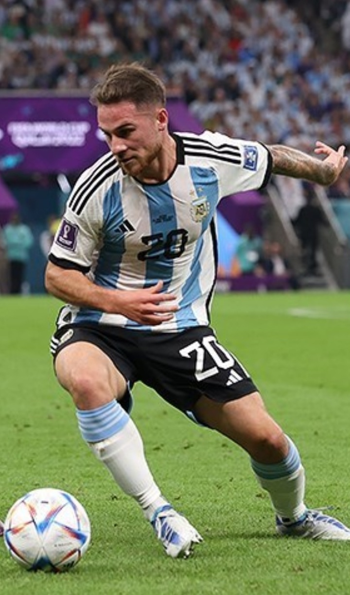
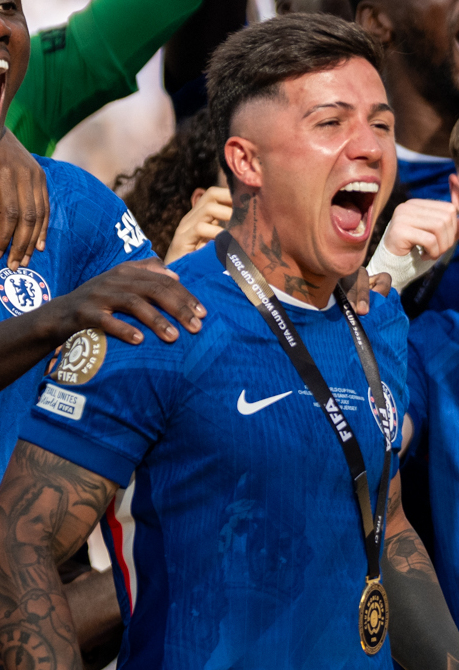
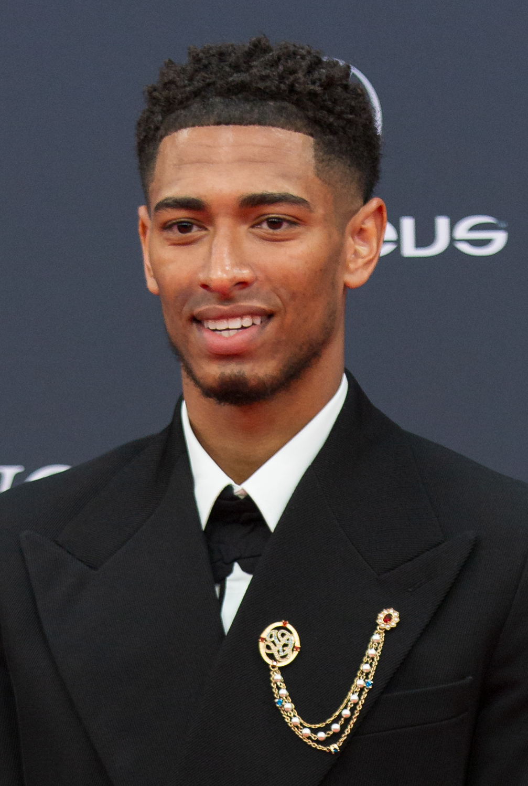
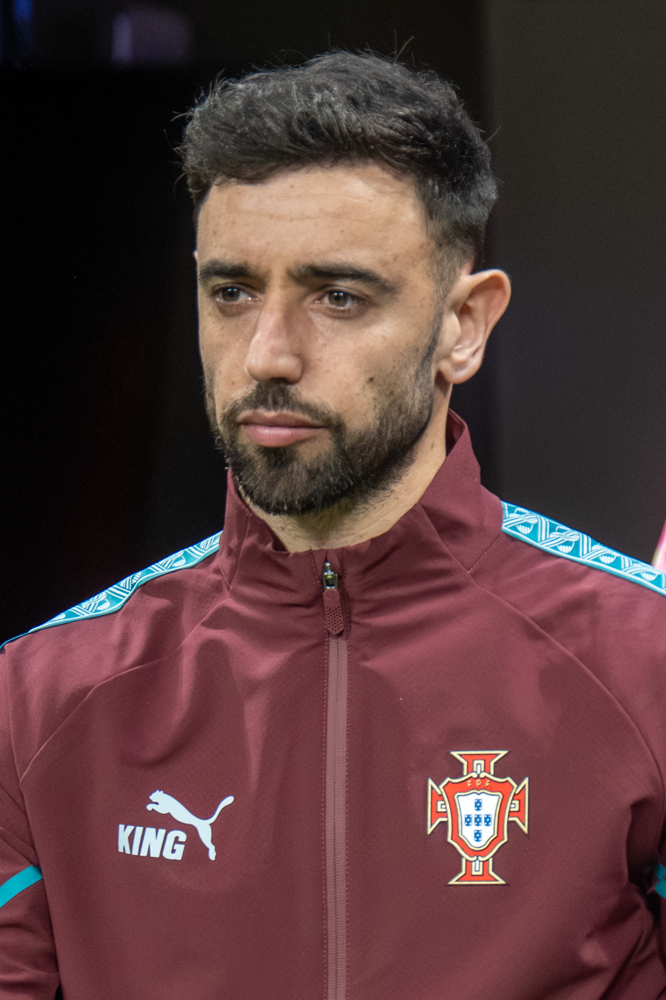

🇦🇷 4 組織大腦亞歷克西斯·麥卡利斯特
Alexis Mac Allister
⚽ Liverpool · 阿根廷國家隊
極度懂得空間管理，透過超前站位和無球跑動帶開防守，是連接前場球星與後場防線的完美樞紐。

🇦🇷 5 組織大腦恩佐·費爾南德斯
Enzo Fernández
⚽ Chelsea · 阿根廷國家隊
視野遼闊，擅長透過節奏變化為混亂的進攻梳理清晰路線。與凱塞多組成「一攻一防」黃金雙重奏。
🇺🇾
6
致命武器
費德里科·巴爾韋德
Federico Valverde
⚽ Real Madrid · 烏拉圭國家隊
擁有南美球員的拼搏野性與歐洲化紀律感。能強行用衝刺和標誌性爆射遠射撕開密集防守。

🏴 7 致命武器裘德·貝林厄姆
Jude Bellingham
⚽ Real Madrid · 英格蘭國家隊
無法被單一位置定義。既能中場對抗推進，也能像前腰插入禁區完結。他的發揮決定了英格蘭的上限。

🇵🇹 8 致命武器布魯諾·費爾南德斯
Bruno Fernandes
⚽ Man United · 葡萄牙國家隊
敢傳別人不敢傳的球，是承擔極大風險但也帶來極高回報的進攻發動機。葡萄牙前場的直接輸送線。
 🇩🇪
9
致命武器
🇩🇪
9
致命武器
賈馬爾·穆西亞拉
Jamal Musiala
⚽ Bayern Munich · 德國國家隊
擁有當今足壇最頂尖的中路爆破能力。看他過人不像在突破，而是在人牆細縫中「劃過去」。
 🇪🇸
10
組織大腦
🇪🇸
10
組織大腦
佩德里
Pedri
⚽ Barcelona · 西班牙國家隊
雖年輕但踢球極具老派大師靈氣。深諳「節奏慢與快」的藝術，與羅德里搭配代表西班牙中場最高智慧。
🇵🇹
11
組織大腦
維蒂尼亞
Vitinha
⚽ PSG · 葡萄牙國家隊
能在對手逼搶貼上前的瞬間完成轉身，安全地將球帶出危險區域。是葡萄牙後場到前場「不脫節」的樞紐。